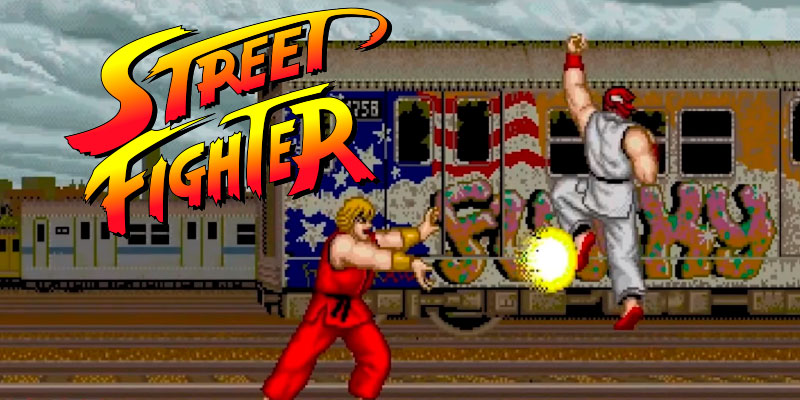

Street Fighter 2
imagem do jogo Street fighter 2
Street Fighter II: The World Warrior[a] é um jogo de luta competitivo desenvolvido pela Capcom e originalmente lançado para arcades em 1991. É a segunda parte da série Street Fighter e a sequência de Street Fighter, lançada em 1987. É o décimo quarto jogo da Capcom a usar a placa do sistema de arcade CP System. Street Fighter II melhorou muitos dos conceitos introduzidos no primeiro jogo, incluindo o uso de movimentos especiais baseados em comando, sistema de combinação, configuração de seis botões e seleção mais ampla de personagens jogáveis, cada um com estilo de luta único. Ele apresenta proeminentemente um popular modo de dois jogadores que obriga o jogo competitivo direto, de humano para humano, que prolongou a sobrevivência do mercado de negócios de arcade de videogame em declínio, estimulando os negócios e impulsionando o gênero de lutadores. Ele inspirou eventos de torneios de base, culminando na Evolution Championship Series (EVO). [11][10] Street Fighter II mudou a dinâmica competitiva do arcade de alta pontuação para competição humana, incluindo grandes grupos. [9]
Street Fighter II se tornou o jogo mais vendido desde a era de ouro dos videogames de arcade. Em 1994, tinha sido tocado por pelo menos 25 milhões de pessoas apenas nos Estados Unidos. Devido ao seu grande sucesso, uma série de versões atualizadas tem recursos e personagens adicionais. Em todo o mundo, mais de 200.000 gabinetes de arcade e 15 milhões de unidades de software de todas as versões de Street Fighter II foram vendidos, arrecadando cerca de US$ 10 bilhões em receita total, tornando-se um dos três jogos de vídeo de maior bilheteria de todos os tempos a partir de 2017 e o jogo de luta mais vendido até 2019. Mais de 6,3 milhões de cartuchos SNES de Street Fighter II foram vendidos, tornando-se o jogo de software único mais vendido da Capcom nas próximas duas décadas, seu jogo mais vendido em uma única plataforma, e o jogo de terceiros mais vendido no SNES.
Street Fighter II é considerado um dos maiores jogos de vídeo de todos os tempos e o jogo de luta mais importante e influente já feito. Seu lançamento é visto como um momento revolucionário dentro de seu gênero, creditado por popularizar o gênero de luta durante a década de 1990 e inspirar outros produtores a criar sua própria série de luta. Isso provocou um renascimento para a indústria de jogos de arcade e impactou jogos de vídeo competitivos e cultura popular mais ampla, como filmes e música.
Street Fighter II segue várias convenções e regras estabelecidas por seu antecessor street fighter de 1987. O jogador enfrenta os adversários em um combate de um contra um em uma série de partidas melhores e duas em três partidas. O objetivo de cada rodada é esgotar a vitalidade do oponente antes que o croneite se esgote. Ambos os lutadores com a mesma vitalidade esquerda rende um "duplo KO" ou "jogo de empate" e rodadas adicionais se seguem até a morte súbita.
No primeiro Street Fighter II, uma luta pode durar até dez rounds; isso foi reduzido para quatro rounds desde Champion Edition. Se não houver um vencedor claro até o final da rodada final, ou o oponente controlado por computador ganhará por padrão em uma partida single-player ou ambos os lutadores perderão em uma partida de 2 jogadores. Após cada terceira partida no modo single-player, uma etapa bônus dá pontos adicionais, incluindo um estágio de quebra de carro, um estágio de quebra de barril e um estágio de quebra de bateria. Entre as partidas, o próximo local da partida é selecionado em um mapa-múndi.
Como em Street Fighter, os controles são um joystick de oito direções e seis botões de ataque. O joystick pode saltar, agachar, andar à esquerda e à direita, e bloquear. Uma troca de força e velocidade são dadas por três botões de soco e três botões de chute, cada um de leve, médio e pesado. O jogador pode realizar uma variedade de movimentos básicos em qualquer posição, incluindo novos ataques de agarramento e arremesso. Os movimentos especiais são executados por combinações de comandos direcionais e baseados em botões.